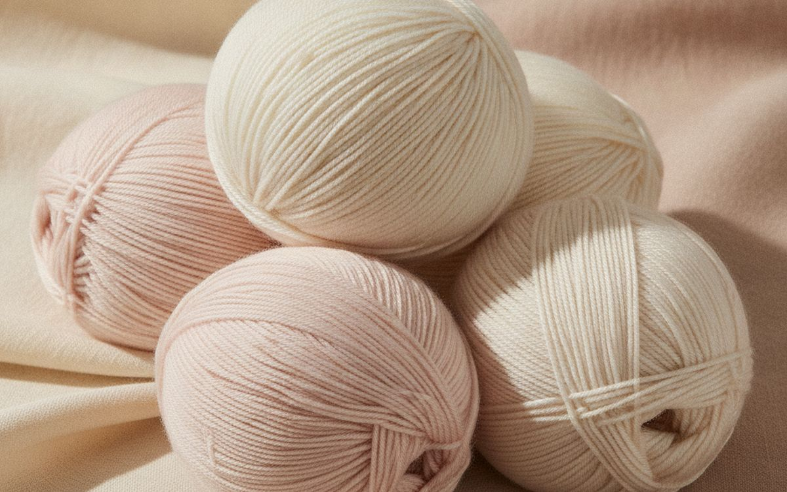
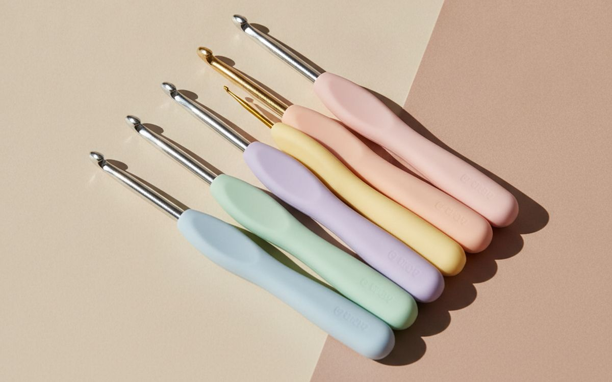
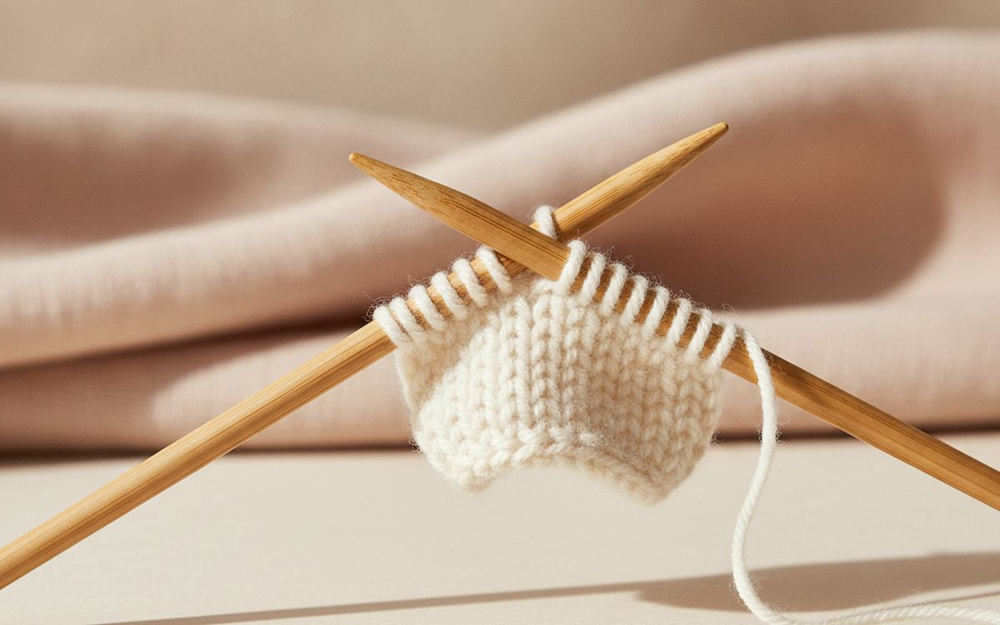
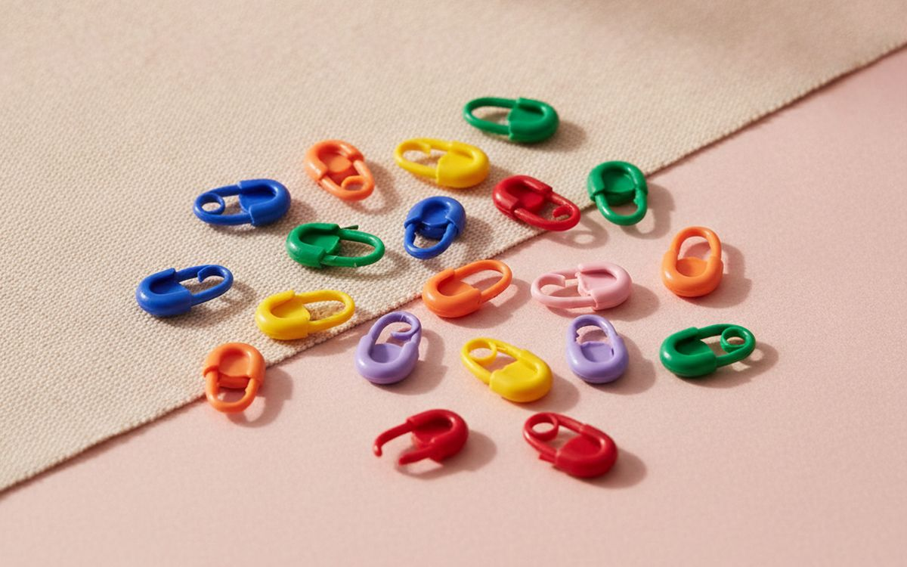
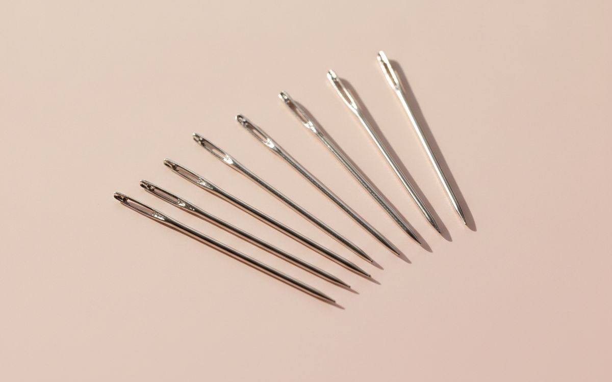
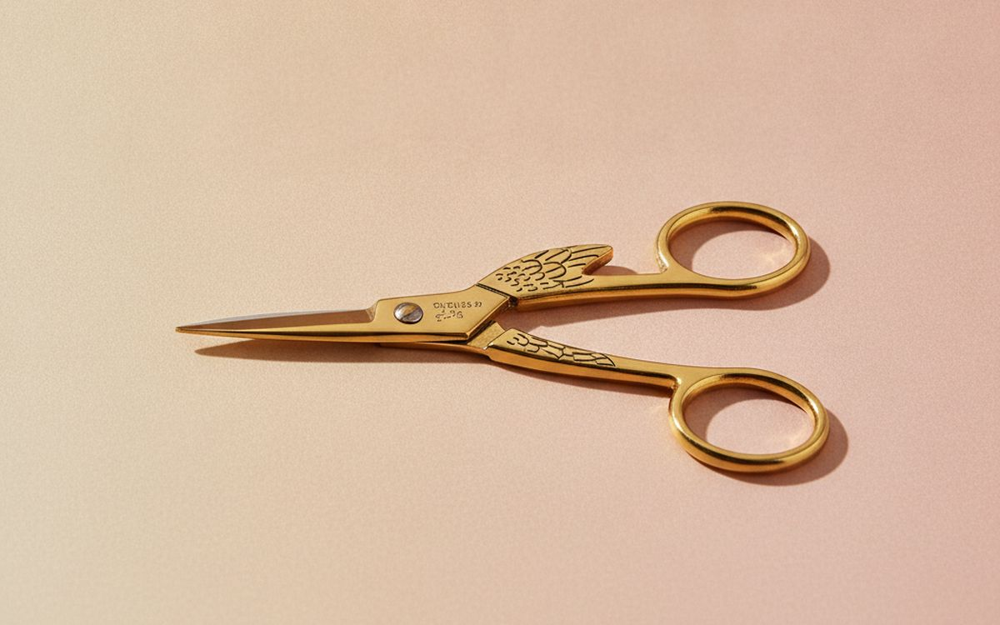
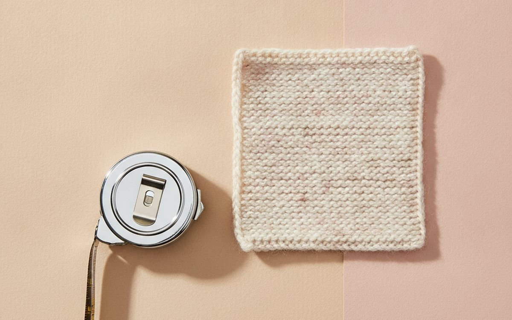
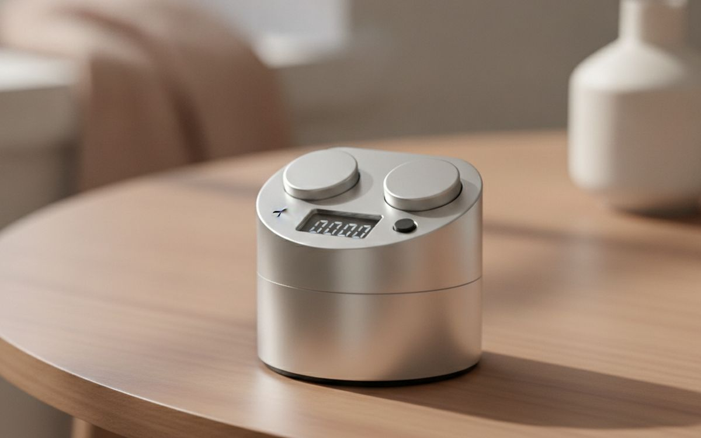
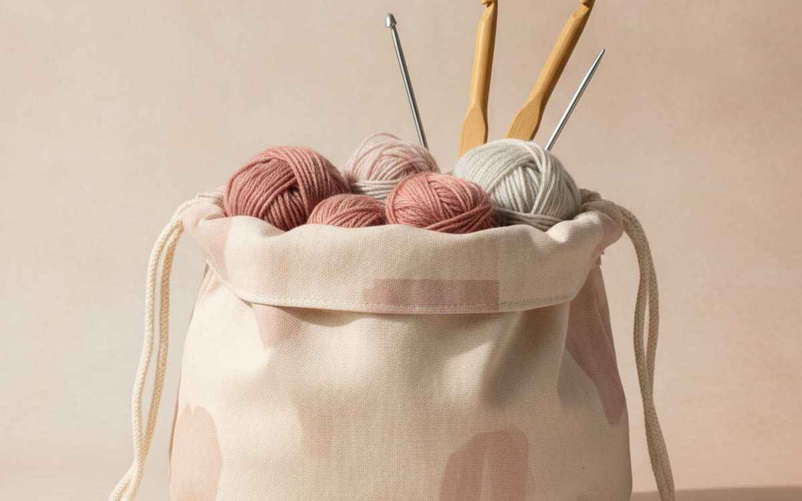
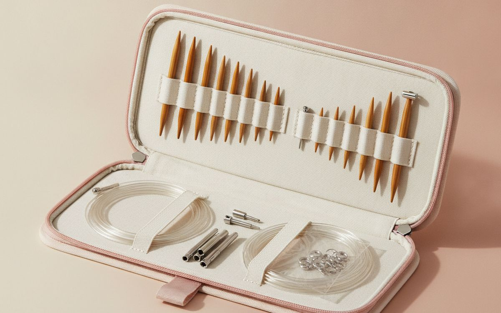

קרושה וסריגה הן פעילויות מרגיעות, ניידות וזולות להתחלה, וזו הסיבה שאנשים רבים מנסים אותן. רבים מפסיקים אחרי כמה ערבים מתסכלים, בדרך כלל כי הם התחילו עם החוט הלא נכון: כהה, פרוותי או מתפצל, כך שהם לא יכלו לראות את התפרים שלהם. חומרי ההתחלה הנכונים הופכים את הלמידה להרבה יותר מהירה.
רשימה זו מסודרת לפי מידת העזרה של כל פריט. חוט חלק, בהיר ובעובי בינוני מופיע ראשון. אחר כך אביזרים קטנים שהופכים פרויקטים לקלים יותר לסיום.
המחירים למטה הם מחירי רחוב משוערים בזמן הכתיבה ומשתנים כל הזמן, במיוחד במהלך אירועי מכירות. התייחסו אליהם כאל טווח גס לתקצוב, לא כאל הצעת מחיר. תמיד בדקו את הרישום החי לפני שאתם קונים.
בקצרה
חוט חלק, בהיר, במשקל בינוני (worsted weight)
הדבר שהופך את הלמידה לקלה יותר
גילוי נאות. הקישורים בעמוד הזה הם קישורי שותפים. אם תקנו דרכם אנחנו עשויים להרוויח עמלה, בלי תוספת עלות לכם. זה לא משפיע על מה שנכנס לרשימה או על הסדר שלו.
איך בחרנו
הבחירות האלו מגיעות ממורים לסריגה, קהילות אמנות סיבים ודיווחים של בעלים לטווח ארוך, שנבדקו מול רישומי קמעונאות עדכניים. לא בדקנו אישית כל פריט כאן. הדרכות וידאו חינם ותבניות למתחילים זמינות באופן נרחב והן המורה הטובה ביותר לצד האספקה הזו.
השוואה מהירה
המחירים הם הערכה נכון לזמן הכתיבה ומשתנים לעיתים קרובות.
הבחירות

01 · הדבר שהופך את הלמידה לקלה יותרחוט חלק, בהיר, במשקל בינוני (worsted weight)
מתחילים צריכים לראות כל תפר בבירור. חוט חלק, בהיר ובעובי בינוני מראה תפרים היטב ולא מתפצל. הימנעו מצבעים כהים, מחוטי מוחיר פרוותיים, מחוטי צ'ניל עבים ומחוטי קטיפה עד שתהיו בטוחים; הם מסתירים תפרים וקשה לפרק אותם. תערובות אקריליק או כותנה הן זולות וסלחניות. קנו עוד, כי תרגול דורש הרבה. היתרונות: קל לראות תפרים, זול לתרגול, וסלחני. החיסרון הוא אמיתי: אקריליק פחות חם מצמר וחוטי נובלטי קשים למתחילים, אז שקלו זאת מול התדירות שבה זה באמת ישמש.
$5-10 per skeinעל מה מוותרים: אקריליק פחות חם מצמר
בעד
- קל לראות תפרים
- זול לתרגול
- סלחני
נגד
- אקריליק פחות חם מצמר
- חוטי נובלטי קשים למתחילים

02 · קרושה נוחמחטי קרושה ארגונומיות
מחטים דקות ממתכת גורמות להתכווצויות בידיים בסשנים ארוכים. מחטים עם ידיות רכות ועבות נוחות הרבה יותר, במיוחד לאנשים עם דלקת פרקים. סט המכסה 2-6 מ"מ מתאים לרוב החוטים; מחט 5 מ"מ מתאימה לחוט במשקל בינוני. Clover Amour וסטים דומים פופולריים. היתרונות: פחות עומס על הידיים, מתאים לרוב משקלי החוטים, וטוב לסשנים ארוכים. החיסרון הוא אמיתי: סטים זולים מכילים מחטים מחוספסות שתופסות את החוט וגודלן מסומן, אז שקלו זאת מול התדירות שבה זה באמת ישמש. ב-$10-25, זו תוספת קטנה ובעלת סיכון נמוך לרשימה ולא רכישת מרכזית שצריך לחשוב עליה הרבה.
$10-25על מה מוותרים: סטים זולים מכילים מחטים מחוספסות שתופסות את החוט
בעד
- פחות עומס על הידיים
- מתאים לרוב משקלי החוטים
- טוב לסשנים ארוכים
נגד
- סטים זולים מכילים מחטים מחוספסות שתופסות את החוט
- ודאו שהגדלים מסומנים

03 · סריגה למתחיליםמחטי סריגה מבמבוק או עץ
מחטי מתכת חלקלקות, ותפרים נופלים מהן, מה שמתוסכל מתחילים. לבמבוק ועץ יש קצת אחיזה, מה ששומר על התפרים על המחט. התחילו עם גודל בינוני כמו US 8 (5 מ"מ) לחוט במשקל בינוני. היתרונות: תפרים נשארים על המחט, חמים וקלים, ושקטים. החיסרון הוא אמיתי: מחטים דקות מעץ יכולות להישבר ואיטיות יותר ממתכת לאחר ניסיון, אז שקלו זאת מול התדירות שבה זה באמת ישמש. במחיר של $10-20, קל להצדיק זאת גם אם זה ישמש רק לשימוש מזדמן ולא יומיומי.
$10-20על מה מוותרים: מחטים דקות מעץ יכולות להישבר
בעד
- תפרים נשארים על המחט
- חמים וקלים
- שקטים
נגד
- מחטים דקות מעץ יכולות להישבר
- איטיים יותר ממתכת לאחר ניסיון

04 · לא לאבד את המקוםסימני תפרים (Stitch markers)
סימני תפרים מסמנים את תחילת סבב, חזרות של תבנית או הגדלות. לקרושה, הם חיוניים כמעט לאמיגורומי ולעבודה בסבבים. סימני נעילה עובדים לשתי המלאכות. היתרונות: שומרים על המקום, חיוניים לסבבים, וזולים. החיסרון הוא אמיתי: קל לאבד ופלסטיק זול תופס את החוט, אז שקלו זאת מול התדירות שבה זה באמת ישמש. ב-$5-10, זה מרוויח את מקומו ברשימה מבלי לבקש התחייבות גדולה מראש. כמו כל דבר ברשימה זו, בדקו את פרטי הרישום המדויקים ואת המחיר הנוכחי לפני שאתם מוסיפים לעגלה.
$5-10על מה מוותרים: קל לאבד
בעד
- שומרים על המקום
- חיוניים לסבבים
- זולים
נגד
- קל לאבד
- פלסטיק זול תופס את החוט

05 · הסתרת קצוות חוטסט מחטי שטיח (tapestry needle)
סיום פרויקט פירושו להסתיר קצוות חוט ולתפור חלקים יחד. מחטי שטיח קהות עם עיניים גדולות מחליקות דרך תפרים מבלי לפצל את החוט. מחטים עם קצה מעוקל קלות יותר. הן זולות וקלות לאיבוד, אז קנו סט עם נרתיק. היתרונות: סיום אסתטי, לא מפצל את החוט, וזול. החיסרון הוא אמיתי: קל לאבד ופלסטיק מתעקם, אז שקלו זאת מול התדירות שבה זה באמת ישמש. ב-$5-8, זו תוספת קטנה ובעלת סיכון נמוך לרשימה ולא רכישת מרכזית שצריך לחשוב עליה הרבה.
$5-8על מה מוותרים: קל לאבד
בעד
- סיום אסתטי
- לא מפצל את החוט
- זול

06 · חיתוכים נקייםמספריים קטנים וחדים
מספריים קטנים וחדים חותכים חוט בצורה נקייה ונכנסים לתיק פרויקט. מספרי רקמה הם הבחירה הקלאסית. שמרו אותם רק לחוט כדי שיישארו חדים. היתרונות: חיתוכים נקיים, ניידים, וזולים. החיסרון הוא אמיתי: קצוות מחודדים דורשים כיסוי ומתקהים במהירות על נייר, אז שקלו זאת מול התדירות שבה זה באמת ישמש. במחיר של $8-15, קל להצדיק זאת גם אם זה ישמש רק לשימוש מזדמן ולא יומיומי. שום דבר מזה לא הופך אותו לחיוני לכל מי שקורא את זה, רק שווה לדעת אם התיאור לעיל תואם את אופן השימוש שלכם בחלל.
$8-15על מה מוותרים: קצוות מחודדים דורשים כיסוי
נגד
- קצוות מחודדים דורשים כיסוי
- מתקהים במהירות על נייר

07 · בדיקת גודלסרט מדידה
תבניות נותנות מידות וצפיפות (gauge), ובדיקת התפרים לאינץ' היא איך שסוודר יתאים בסוף. סרט מדידה קטן נשלף חי בתיק הפרויקט. היתרונות: בדיקת צפיפות וגודל, זעיר, וזול. החיסרון הוא אמיתי: זולים נמתחים וודאו שהוא מודד גם באינצ'ים וגם בס"מ, אז שקלו זאת מול התדירות שבה זה באמת ישמש. ב-$3-6, זה מרוויח את מקומו ברשימה מבלי לבקש התחייבות גדולה מראש. כמו כל דבר ברשימה זו, בדקו את פרטי הרישום המדויקים ואת המחיר הנוכחי לפני שאתם מוסיפים לעגלה.
$3-6על מה מוותרים: זולים נמתחים
בעד
- בדיקת צפיפות וגודל
- זעיר
- זול
נגד
- זולים נמתחים
- ודאו שהוא מודד גם באינצ'ים וגם בס"מ

08 · ספירת שורותמונה שורות
איבוד ספירת השורות הוא אחד התסכולים הנפוצים ביותר למתחילים. מונה קליק או מונה טבעת עוקבים אחר הספירה. אפליקציות בטלפון עובדות גם כן, אבל מונה פיזי מהיר יותר. היתרונות: אף פעם לא מאבדים ספירה, זול, ומהיר. החיסרון הוא אמיתי: צריך לזכור ללחוץ ואפליקציות עובדות גם כן, אז שקלו זאת מול התדירות שבה זה באמת ישמש. ב-$5-10, זו תוספת קטנה ובעלת סיכון נמוך לרשימה ולא רכישת מרכזית שצריך לחשוב עליה הרבה. זו רכישה קטנה בהקשר של כל הסט-אפ, אבל כזו שקל להתחרט עליה אם מדלגים עליה ברגע שמבחינים בפער.
$5-10על מה מוותרים: חייבים לזכור ללחוץ
בעד
- אף פעם לא מאבדים ספירה
- זול
- מהיר
נגד
- חייבים לזכור ללחוץ
- אפליקציות עובדות גם כן

09 · נשיאת פרויקטיםתיק פרויקט
תיק פרויקט שומר על החוט נקי, מונע קשרים ומקל על נשיאת יצירה בטיולים ובהסעות. חפשו פתח להשחלת חוט וכיסים פנימיים. היתרונות: שומר על פרויקטים יחד, נייד, ומגן על החוט. החיסרון הוא אמיתי: נחמד שיש, לא חיוני וסקוטש תופס את החוט, אז שקלו זאת מול התדירות שבה זה באמת ישמש. במחיר של $10-25, קל להצדיק זאת גם אם זה ישמש רק לשימוש מזדמן ולא יומיומי. שום דבר מזה לא הופך אותו לחיוני לכל מי שקורא את זה, רק שווה לדעת אם התיאור לעיל תואם את אופן השימוש שלכם בחלל.
$10-25על מה מוותרים: נחמד שיש, לא חיוני
בעד
- שומר על פרויקטים יחד
- נייד
- מגן על החוט
נגד
- נחמד שיש, לא חיוני
- סקוטש תופס את החוט

10 · סורגות מחויבותסט מחטי סריגה עגולות מתחלפות
ברגע שאתם מכורים לסריגה, סט מתחלף עם קצוות מחטים וכבלים בגדלים רבים מחליף עשרות מחטים נפרדות ועובד לכובעים, סוודרים ושמיכות. זו רכישה גדולה, אז קנו אותה רק אחרי שאתם יודעים שאתם מתמידים. היתרונות: מחליף עשרות מחטים, מתאים לרוב הפרויקטים, ומחזיק שנים. החיסרון הוא אמיתי: חיבורים יכולים להתרופף ויקר למתחילים, אז שקלו זאת מול התדירות שבה זה באמת ישמש. ב-$50-120, זה מרוויח את מקומו ברשימה מבלי לבקש התחייבות גדולה מראש.
$50-120על מה מוותרים: חיבורים יכולים להתרופף
בעד
- מחליף עשרות מחטים
- מתאים לרוב הפרויקטים
- מחזיק שנים
נגד
- חיבורים יכולים להתרופף
- יקר למתחילים
שאלות נפוצות
מה קל יותר ללמוד, קרושה או סריגה?
רבים מוצאים קרושה קלה יותר להתחלה כי יש רק לולאה חיה אחת. שניהם ניתנים ללמידה בסוף שבוע עם הדרכות וידאו.
איזה חוט כדאי למתחילים להשתמש בו?
חוט חלק, בהיר, במשקל בינוני (worsted weight).
מהו פרויקט ראשון טוב?
מטלית כלים או צעיף פשוט. קטן, שטוח וסלחני.
האם ערכות למתחילים שוות את זה?
חלקן כן, אבל לרבות יש מחטים וחוטים באיכות ירודה. קניית כמה פריטים טובים בנפרד עובדת לעיתים קרובות טוב יותר.
הדילים של היום
ראו מה מוזל עכשיו.
דילים →← כל המדריכים
כשותפים של עליאקספרס אנחנו מרוויחים עמלה מרכישות מזכות. המחירים והזמינות נכונים לזמן הפרסום ועשויים להשתנות.